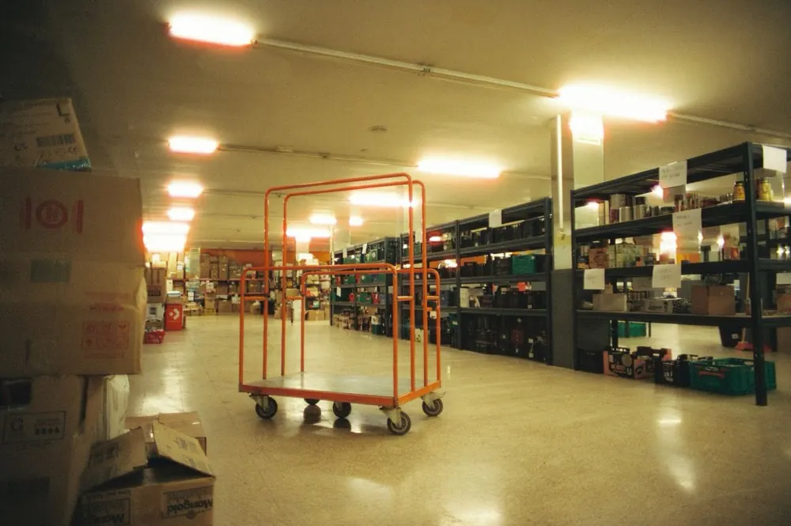

Audio para ambientes de alto ruido
Audio industrial
En la industria se necesita un sistema de audio que genere un ambiente de trabajo agradable y permita emitir avisos en las áreas comunes. Integra bocinas de mayor capacidad para zonas abiertas con altos niveles de ruido derivados de la producción y la operación. Su diseño debe medir correctamente esos niveles para elegir las bocinas adecuadas.
- Integración
- Centralización de recursos
- Fácil implementación

¿Te suena familiar?
Los problemas que más vemos en audio industrial
Y cómo los resolvemos.
- 01
Los avisos se pierden entre la maquinaria
En ambientes ruidosos un altavoz común no basta.
Con STAV: Medimos el ruido y elegimos bocinas y potencia adecuadas.
- 02
Hay áreas sin cobertura
Patios, andenes y zonas abiertas quedan fuera del aviso.
Con STAV: Planeamos la cobertura con bocinas de alcance y zonas.
- 03
Se avisa a toda la planta cuando solo importa un área
Un sistema sin zonas genera ruido innecesario.
Con STAV: Control de zonas para dirigir cada mensaje donde corresponde.
- 04
La línea de voceo falla o está en corto
Cables dañados dejan al sistema fuera de servicio.
Con STAV: Revisamos y reparamos la red de voceo y las líneas en corto.
Qué incluye
- 01
Medición de niveles de ruido
Medimos el ruido del área para dimensionar potencia y bocinas.
- 02
Selección de bocinas de alta capacidad
Equipos pensados para zonas abiertas y ruidosas.
- 03
Instalación en naves y patios
Cableado y montaje en áreas industriales y de maniobra.
- 04
Avisos en áreas comunes
Voceo para comunicar indicaciones al personal.
- 05
Control de zonas
Cada área con su propio nivel y contenido.
- 06
Reparación y mantenimiento
Revisión de redes de voceo y reparación de líneas en corto.
Dónde se aplica
- Naves industriales
- Centros de distribución
- Fábricas
- Líneas de proceso
- Patios de maniobra
Beneficios
Técnicos
- Integración
- Centralización de recursos
- Fácil implementación
Para el usuario
- Confort
- Ambientación
- Control de zonas
Componentes que podemos integrar
Con total transparencia
Ventajas y qué debes considerar
Todo proyecto tiene pros y contras. Preferimos que los conozcas desde el principio.
+ Lo que ganas
- Avisos claros aun con ruido alto
- Comunicación rápida para operación y seguridad
- Ambientación que mejora el entorno de trabajo
- Zonas independientes
- Sistema que puede crecer con la planta
! Lo que debes considerar
- Hay que medir el ruido de cada áreaEs parte del diseño; lo hacemos antes de proponer equipo.
- Instalar en altura o en áreas operando exige coordinaciónCoordinamos horarios y accesos contigo.
- Polvo, humedad o intemperie exigen equipo adecuadoSeleccionamos el equipo según el entorno de cada zona.
- Distancias largas requieren buen diseño de cableadoLo contemplamos desde el proyecto.
La diferencia
Solución improvisada vs. proyecto profesional
Solución improvisadaCubre solo lo cercano
Proyecto con STAVPlaneada para toda la nave y los patios
Solución improvisadaSe pierde con el ruido
Proyecto con STAVPotencia y bocinas medidas para el entorno
Solución improvisadaTodo suena en todos lados
Proyecto con STAVControl por zonas
Solución improvisadaPensado para interiores
Proyecto con STAVElegido según el entorno
Solución improvisadaSin seguimiento
Proyecto con STAVReparación y mantenimiento
Aprende de otros
Errores comunes que evitamos
Nos gusta que lo sepas antes de gastar de más.
- Usar bocinas de interior en naves o exteriores
- No medir el ruido antes de dimensionar
- Subir el volumen en lugar de mejorar la cobertura
- No separar zonas de trabajo
Cotiza más rápido
Arma tu solicitud en 30 segundos
Elige tus opciones y te abrimos WhatsApp con el mensaje ya escrito. Sin registros ni formularios.
Cómo trabajamos
Del levantamiento al sistema funcionando
- 01
Levantamiento técnico
Visitamos el sitio, medimos el espacio y entendemos qué necesitas.
- 02
Diseño y propuesta
Definimos equipos, zonas y ubicaciones, y te entregamos una propuesta clara.
- 03
Suministro e instalación
Proveemos los equipos, hacemos el cableado y el montaje.
- 04
Puesta en operación y soporte
Dejamos todo funcionando y damos mantenimiento.
Por qué STAV
Por qué elegirnos para tu proyecto de audio industrial
Producto y servicio en un solo lugar
Somos comercializadora de productos de audio y también hacemos la asesoría, instalación y mantenimiento.
Marcas líderes
Trabajamos con marcas como Shure, Biamp, Genelec, Kramer, Barco y más de 20 reconocidas del sector.
Experiencia con grandes cuentas
Hemos brindado servicios a empresas como Walmart, HSBC, Banorte, Alsea y Suburbia.
Registro D&B
Contamos con número D-U-N-S 81-616-3026, un identificador comercial reconocido.


Dudas frecuentes
Preguntas sobre audio industrial
¿Se escucha con la maquinaria en operación?
Por eso medimos primero el nivel de ruido del área y elegimos bocinas y potencia adecuadas para que los avisos se entiendan.
¿Pueden reparar la red de voceo que ya tengo?
Sí. Hacemos reparación de red interna de voceo y de líneas en corto.
¿Pueden trabajar con la planta en operación?
Sí lo planeamos así: definimos contigo horarios y áreas para interferir lo menos posible.
¿Cuánto cuesta?
Depende del tamaño del espacio, del número de zonas o puntos y de los equipos que elijamos. Por eso no damos cifras al aire: hacemos el levantamiento y te entregamos una propuesta clara para que decidas con datos.
¿Atienden en mi ubicación?
Cuéntanos dónde está tu proyecto y te confirmamos si podemos atenderlo. Escríbenos por WhatsApp o llama al 800 623 1131.
Hablemos de tu proyecto de audio industrial
Te asesoramos sin compromiso y te respondemos con una propuesta.
Más servicios